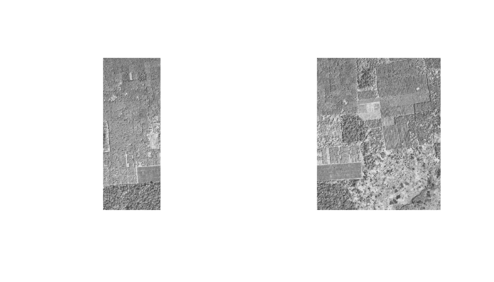
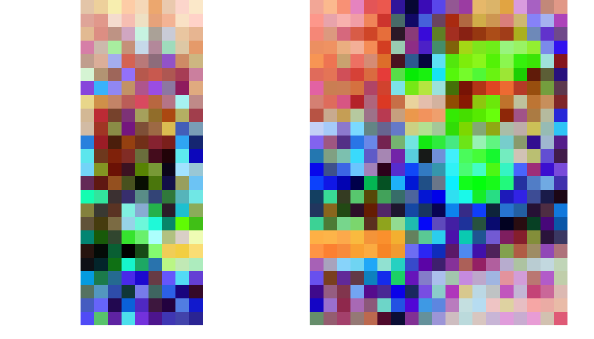
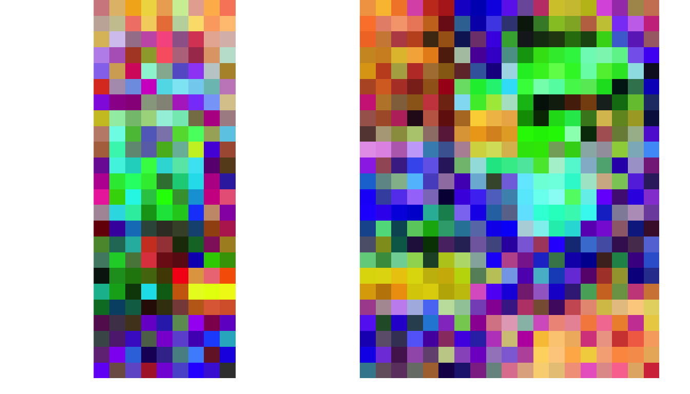

Introduction
The FOTO (Fourier Transform Textural Ordination) method uses a principal component analysis (PCA) on radially averaged 2D fourier spectra to characterize (greyscale) image texture (of canopies).
Examples
The original implementation used discrete zones (blocks of x pixels wide, window_size parameter) to classify an image. This original implementation is the default, and the least computationally intensive, as it effectively reduces to resolution of the orignal data. In short, data is aggregated at the size of the specified window.
An additional, moving window, approach is provided which returns an object of the same resolution as the original image by overlyaing a moving window (see window_size parameter) over every pixel in the image. This methods is computationally intesive and should be used with care (as processing can take a long time).
Zones
The zoned approach on the foto() routine returns a nested list with the source data (aggregation zones, radial spectra) and a final colour image consisting of the three major principal components for every pixel. An example analysis is run below.
library(foto)
# load demo data
r <- raster::raster(sprintf("%s/extdata/yangambi.png", path.package("foto")))
# classify pixels using zones (discrete steps)
output <- foto(r,
plot = TRUE,
window_size = 51,
method = "zones")
In the resulting image pixels with a similar colour have a similar texture. The analysis is run a historical image of plantations near Yangambi, DR Congo. The regular pattern of planted trees is picked up readily by the algorithm.
Moving window
Below you find an example analyis for a subsection of the processed image above. The output format of the moving window analysis is consistent with that of the zoned approach.
# crop the image for speed
r_1 <- crop(r, extent(1,100,1,100))
# crop the image
output_1 <- foto(r_1,
plot = TRUE,
window_size = 51,
method = "mw")
#> A moving window approach is computationally intensive.
#> This might take a while.
Global normalization
Global normalization over a batch of images is supported through the foto_batch() function. This centers the radial spectra across all images in a particular directory, so either spatial or temporal comparisons can be made between different images. An example is given below for a batch of two images. The top shows the original images, the middle the normalized ones (look at the correspondence on the edges), the bottom are the data for the individually processed images. The latter still look alike, but are not exactly comparable in a one-to-one analysis.
# load demo data path
path <- system.file("extdata",package="foto")
# classify pixels using zones (discrete steps)
# across images
output_batch <- foto_batch(path = path,
window_size = 51,
method = "zones")
# indiviual images would look different when processed one by one
r_2 <- raster::raster(sprintf("%s/extdata/yangambi_2.png",
path.package("foto")))
# classify pixels using zones (discrete steps)
output_2 <- foto(r_2,
window_size = 51,
method = "zones")
par(mfrow = c(1,2))
plot(r_2, col = grey.colors(100), axes = FALSE, legend = FALSE, box = FALSE)
plot(r, col = grey.colors(100), axes = FALSE, legend = FALSE, box = FALSE)
par(mfrow = c(1,2))
plotRGB(output_batch[[1]], stretch = "hist")
plotRGB(output_batch[[2]], stretch = "hist")

Partitioned normalization
Advanced processing such as partiotioned normalization as described in Barbier et al. 2010 is currently not provided in the package. I refer to this paper for the appropriate routines and the raw foto() outputs for the necessary data sources.